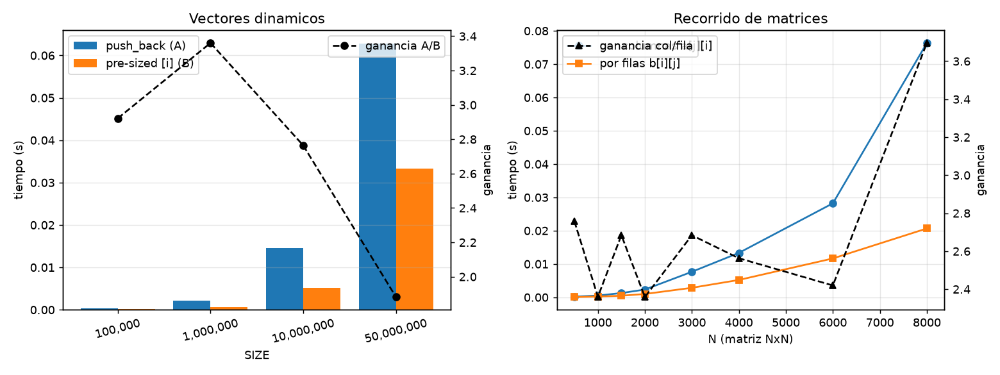
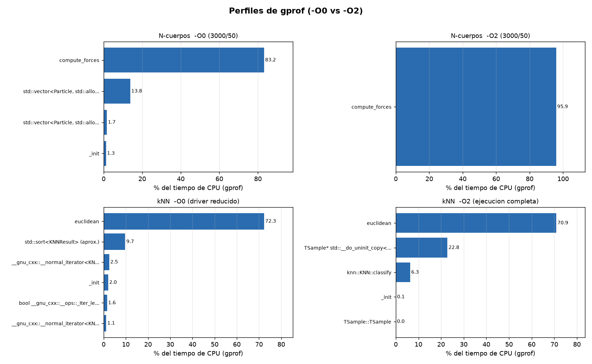
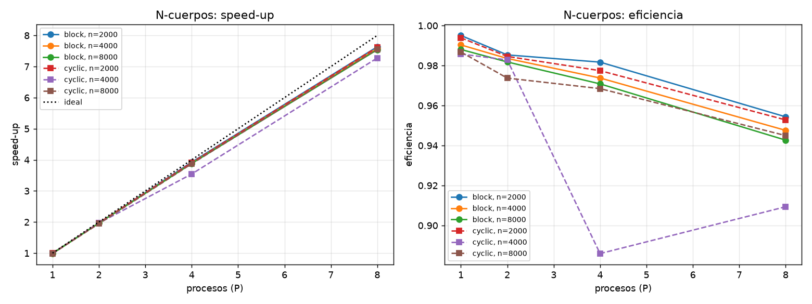
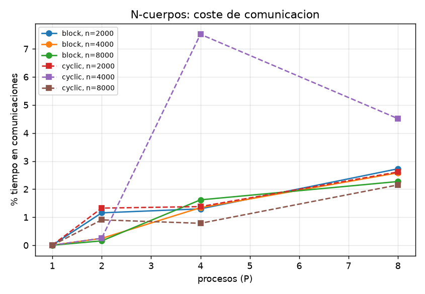
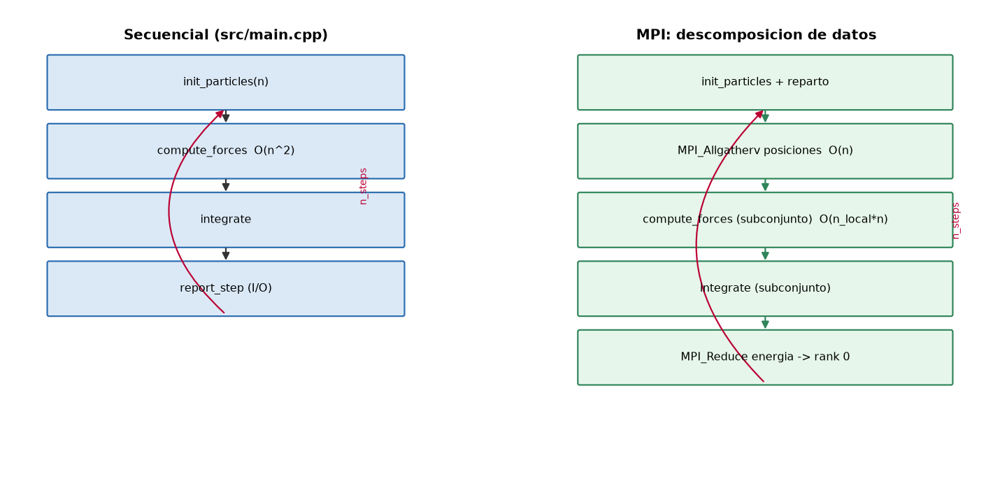
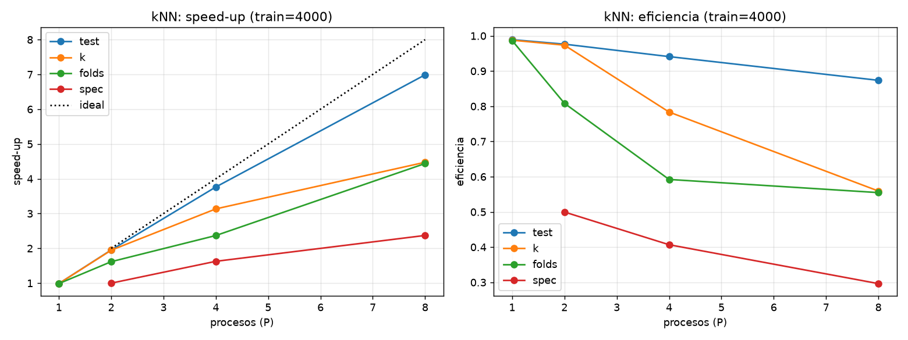
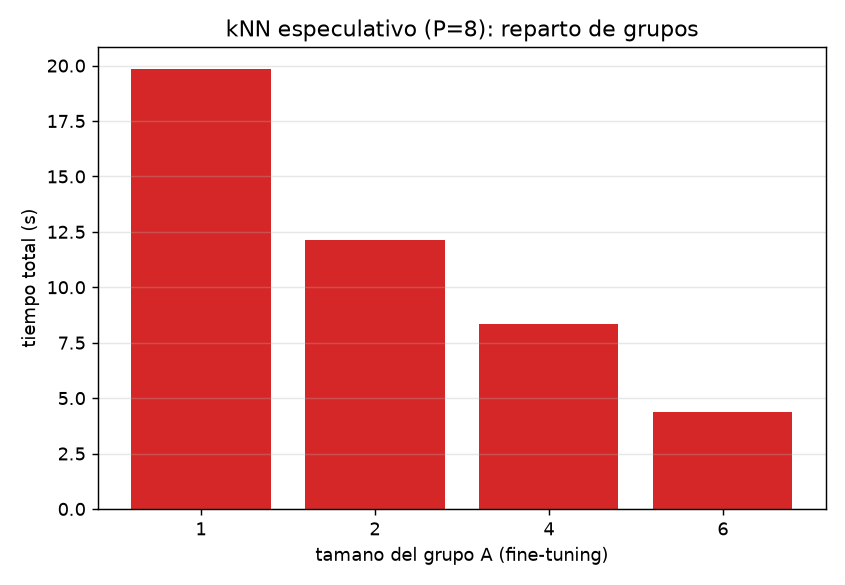
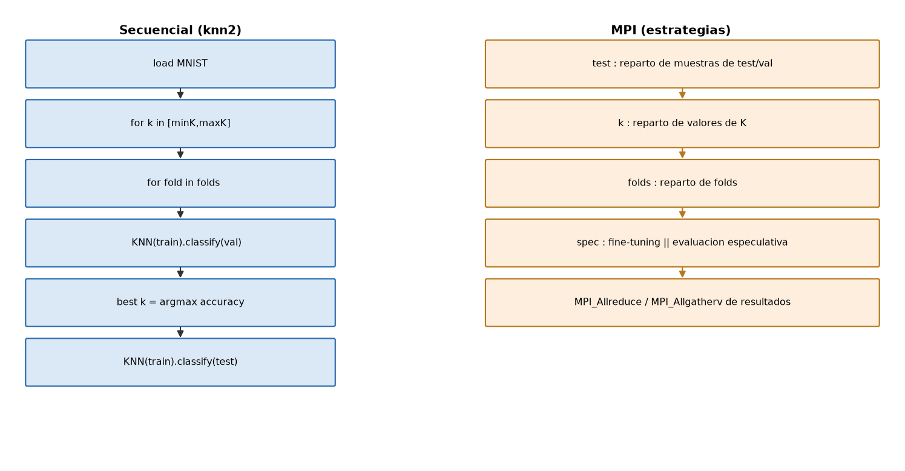

Asignatura: Ingeniería de los Computadores — Curso 2026-27 Contenido: Tareas 0 a 4 de la guía de la Práctica 3.
El objetivo de esta práctica es estudiar el paralelismo en sistemas de memoria distribuida mediante MPI (Message Passing Interface). Para ello:
gprof el código propio de la práctica anterior y el código
proporcionado para localizar los cuellos de botella (Tarea 1).Todas las medidas se han realizado en la siguiente máquina (salvo la ejecución distribuida de la Tarea 2, cuyo procedimiento para el clúster real se documenta):
| Característica | Valor |
|---|---|
| CPU | AMD Ryzen 7 5800X (Zen 3) |
| Núcleos / hilos | 8 núcleos físicos / 16 hilos lógicos (SMT) |
| Frecuencia | 3.8 GHz base, hasta 4.85 GHz turbo |
| Caché L1 | 8 × 32 KiB datos + 8 × 32 KiB instrucciones |
| Caché L2 | 8 × 512 KiB (4 MiB total) |
| Caché L3 | 32 MiB compartida |
| Memoria | NUMA: 1 nodo (0-15) |
| Sistema operativo | Debian GNU/Linux 13 (trixie) |
| Compilador | g++ 14.2.0 |
| MPI | Open MPI 5.0.7 |
| Profiling | gprof (GNU binutils) |
Nota sobre el clúster. La guía pide desarrollar la práctica sobre un multicomputador de al menos 3 computadores. Por disponibilidad de recursos, el desarrollo y la toma de medidas se han hecho sobre un único nodo lanzando
mpiruncon varios procesos (memoria compartida emulando paso de mensajes, que es el mismo modelo de programación MPI). En la Tarea 2 se documenta el procedimiento completo (hostfile, certificado SSH y ordenmpirun) para trasladarlo al clúster del laboratorio. Los aspectos algorítmicos medidos (comportamiento de las comunicaciones colectivas, balance de carga, coste de sincronización) no dependen de si los procesos residen en la misma máquina, aunque los tiempos absolutos de red serán mayores en un clúster real.
Se comparan dos formas de inicializar un std::vector<int> de tamaño SIZE:
push_back.std::vector<int> b(SIZE)) y
escribir por índice (b[i] = i).Programa: p3/tarea0/vector_bench.cpp. Resultados (results/tarea0_vector.csv):
| SIZE | A: push_back (s) |
B: pre-sized [i] (s) |
Ganancia A/B |
|---|---|---|---|
| 100 000 | 0.000336 | 0.000115 | 2.92× |
| 1 000 000 | 0.002134 | 0.000635 | 3.36× |
| 10 000 000 | 0.014481 | 0.005239 | 2.76× |
| 50 000 000 | 0.062795 | 0.033373 | 1.88× |
Respuestas:
push_back provoca realojos periódicos: cuando el tamaño
supera la capacidad, la implementación reserva un bloque mayor (factor de
crecimiento) y copia todos los elementos existentes. El coste total es
O(SIZE) amortizado, pero con un factor constante mucho mayor (copias de memoria
y posibles fallos de caché/TLB). B evita por completo esos realojos y copias.b[lo..hi)). A no de forma trivial: push_back modifica el tamaño de
forma dependiente y el número de realojos depende del patrón de inserciones;
para paralelizar A habría que conocer el tamaño final (reservarlo) o repartir
posiciones y concatenar después, lo que añade sincronización. La conclusión de
diseño es reservar/particionar de antemano antes de paralelizar.Se recorren dos matrices N×N (en C almacenadas por filas, row-major):
a[j][i] = i+j (bucle exterior i, interior j).b[i][j] = i+j.Programa: p3/tarea0/matrix_bench.cpp. Resultados (results/tarea0_matrix.csv):
| N | A: por columnas (s) | B: por filas (s) | Ganancia A/B |
|---|---|---|---|
| 500 | 0.000182 | 0.000066 | 2.76× |
| 1000 | 0.000524 | 0.000222 | 2.36× |
| 1500 | 0.001267 | 0.000472 | 2.68× |
| 2000 | 0.002321 | 0.000984 | 2.36× |
| 3000 | 0.007652 | 0.002851 | 2.68× |
| 4000 | 0.013330 | 0.005201 | 2.56× |
| 6000 | 0.028211 | 0.011659 | 2.42× |
| 8000 | 0.076362 | 0.020661 | 3.70× |

Respuestas:
N elementos; en B se accede a posiciones consecutivas.N≳1000 la matriz (≥4 MB) ya no cabe
en L2 y la diferencia empieza a ser clara; crece al aumentar N, hasta ~4× en
N=8000.int. En B se aprovechan las 16 posiciones antes de traer la siguiente
línea (spatial locality) y el prefetch y el HW van adelantados. En A, cada
acceso usa 1 de cada 16 posiciones y salta N enteros: casi cada acceso es un
cache miss y se traen líneas completas con un único dato útil; además se
generan más accesos a TLB por los saltos grandes.De los dos casos se extraen las siguientes directrices, aplicadas en las Tareas 3 y 4:
push_back).knn2, el 22 % del tiempo secuencial a -O2
se debe a copias de TSample (constructor de KNN y splitDataset). La
versión paralela trabaja con índices sobre el dataset en lugar de copiar
subconjuntos.Para cada programa se compiló con -g -pg a -O0 y a -O2, se ejecutó y se
analizó con gprof -b -p -q (perfil plano + grafo de llamadas). Los informes
completos están en p3/tarea1_profiling/.
src/main.cpp)Ejecución: 3000 partículas, 50 pasos (perfil_O0.txt, perfil_O2.txt).
| Función | -O0 (% tiempo) | -O2 (% tiempo) |
|---|---|---|
compute_forces |
83.2 % | 95.9 % |
std::vector<Particle>::operator[] |
13.9 % | — (inlined) |
std::vector<Particle>::size() |
1.7 % | — |
Conclusión: compute_forces concentra casi todo el tiempo (O(n²) por paso).
Es la única candidata clara a paralelizar; integrate y report_step son
O(n) y marginales. Tiempos totales: -O0 ≈ 17.6 s frente a -O2 ≈ 1.69 s.
knn2)Se perfilaron dos configuraciones: (a) un driver reducido configurable
(p3/tarea1_profiling/knn_profile.cc, ~15 s) para poder comparar -O0 y -O2,
y (b) la ejecución completa del programa tal cual (cv, 639 s) para obtener
el perfil representativo.
Perfil completo a -O2 (perfil_knn_O2_full.txt, cv sin modificar):
| Función | % tiempo | Nº llamadas |
|---|---|---|
euclidean |
70.9 % | 3 800 000 000 |
__do_uninit_copy (copias de TSample) |
22.8 % | 856 526 (142 s) |
knn::KNN::classify (ordenación + voto) |
6.3 % | 210 000 |
TSample::TSample (carga/resize MNIST) |
0.02 % | 70 000 |
Perfil reducido a -O0 (perfil_knn_profile_O0.txt): euclidean 72.3 % y el
conjunto de operaciones de ordenación (std::sort sobre KNNResult:
__unguarded_partition, operator<, __unguarded_linear_insert, iteradores)
≈ 15 % adicional.
Conclusiones:
- El cálculo de distancias euclídeas domina de forma abrumadora (≈ 70 %),
seguido de la ordenación de vecinos y, a -O2, de las copias de
TSample (≈ 23 %). Al activar optimizaciones, el coste de ordenación se
diluye (el compilador lo optimiza) pero las copias de std::vector<float>
(producto de KNN(train,…), que copia todo el conjunto de entrenamiento en
cada fold, y de splitDataset, que copia muestras) pasan a ser muy relevantes.
- Candidatos a optimizar/paralelizar: (1) el cálculo de distancias (bucle
classify), (2) el bucle sobre muestras de test/validación y (3) el
bucle de búsqueda de K y de folds. Además, eliminar copias es una
optimización secuencial clave (motiva el diseño por índices de la Tarea 4).

(Figura resumen en formato visual; los informes completos de gprof con el
perfil plano y el grafo de llamadas están en p3/tarea1_profiling/.)
p3/tarea2_mpi/hello_mpi.c reproduce el ejemplo de la guía (usa
MPI_Comm_size, MPI_Comm_rank, MPI_Get_processor_name y sched_getcpu()).
Procedimiento (detallado en p3/tarea2_mpi/README_MPI.md):
sudo apt install openmpi-bin libopenmpi-dev).mpicc hello_mpi.c -o hello_mpi.$HOME) y mismo ejecutable en todos los nodos.hostfile con la IP/nombre de cada nodo (plantilla en
p3/tarea2_mpi/hostfile); chmod 600 hostfile.ssh-keygen -t rsa y copiar ~/.ssh/id_rsa.pub a
~/.ssh/authorized_keys de los demás nodos.chmod o+x hello_mpi y ejecutar:mpirun -mca plm_rsh_no_tree_spawn 1 -hostfile hostfile -n 6 ./hello_mpi
results/hello_local.txt:
PID: 9525 Hello from process 2 out of 4 on pc-n4th0 processor 10
¡Hola! desde el procesador 2
PID: 9525 Hello from process 1 out of 4 on pc-n4th0 processor 9
PID: 9525 Hello from process 3 out of 4 on pc-n4th0 processor 3
PID: 9525 Hello from process 0 out of 4 on pc-n4th0 processor 0
Se observa que cada proceso se reparte por núcleos distintos y que el proceso de
rango 2 ejecuta su rama específica. (El PID coincide porque getppid() devuelve
el proceso mpirun padre.)
El bucle principal (ver p3/tarea1_profiling/nbody/perfil_O2.txt) es:
for step in [0, n_steps):
compute_forces(particles) # O(n^2) -> 96% del tiempo
integrate(particles, dt) # O(n)
if step % 10 == 0: report_step(particles, step) # O(n) + E/S
Dependencias: entre pasos existe una dependencia secuencial
(paso N depende del N-1), pero dentro de compute_forces no hay
dependencia: fx,fy de cada partícula i se calculan con las posiciones actuales
de todas las demás, sin escribir posiciones ajenas → paralelismo de datos puro
sobre el bucle externo i (que es el O(n²) y domina). integrate también es
paralelismo de datos.
p3/tarea3_nbody/nbody_mpi.cpp)block contiguo o cyclic round-robin).i depende de todas las partículas, en cada paso se
hace un MPI_Allgatherv de las posiciones (x,y) para que todos los
procesos tengan el estado global actualizado. Allgatherv (variante "v") admite
tamaños de bloque distintos (útil con cyclic y con restos).MPI_Reduce
(SUM) hacia el rango 0, que actúa como rank de E/S (paralelismo funcional).Funciones MPI empleadas: MPI_Init/Finalize, MPI_Comm_rank/size, MPI_Barrier,
MPI_Allgatherv (comunicación colectiva, todos-a-todos), MPI_Reduce
(colectiva, reducción a un nodo), MPI_Wtime (cronómetro).
Modelo, estilo y estructura: modelo de paso de mensajes con SPMD (mismo programa, datos distintos por proceso); estilo de grano grueso con descomposición de dominio; estructura SPMD simétrica con una comunicación colectiva por iteración y un papel especial para el rank 0 (E/S). Se evita comunicar las masas (constantes) mediante replicación, reduciendo el coste por paso a sólo las posiciones.
Modelo de coste por paso y por proceso:
computo = O(n² / P), comunicación = O(n).
La relación comunicación/cómputo es ≈ 2P/n, que disminuye al crecer n →
en problemas grandes la paralelización escala muy bien.
Tiempos secuenciales (referencia, nbody_seq): n=2000 → 0.751 s; n=4000 →
3.006 s; n=8000 → 12.004 s (50 pasos).
Speed-up (respecto al secuencial) y % de tiempo en comunicaciones:
| n | reparto | P=1 | P=2 | P=4 | P=8 | eff. P=8 | % comm (P=8) |
|---|---|---|---|---|---|---|---|
| 2000 | block | 1.00 | 1.97 | 3.93 | 7.63 | 0.95 | 2.8 % |
| 4000 | block | 0.99 | 1.97 | 3.90 | 7.58 | 0.95 | 2.6 % |
| 8000 | block | 0.99 | 1.96 | 3.88 | 7.54 | 0.94 | 2.3 % |
| 2000 | cyclic | 0.99 | 1.97 | 3.91 | 7.62 | 0.95 | 2.6 % |
| 4000 | cyclic | 0.99 | 1.97 | 3.54 | 7.27 | 0.91 | 4.6 % |
| 8000 | cyclic | 0.99 | 1.95 | 3.87 | 7.56 | 0.94 | 2.2 % |
El speed-up es prácticamente lineal hasta P=8 (todos los núcleos físicos) con
eficiencias ≈ 0.94-0.95. El proceso de rango 0 acumula comp y comm máximos;
el porcentaje de comunicación se mantiene por debajo del 5 %. El repunte de
cyclic, n=4000, P=4 (≈ 7 % de comunicación y 3.54× de speed-up) es un valor
anómalo puntual (interferencia del sistema); el resto de medidas son coherentes
con el modelo.
Figuras: figures/fig_tarea3_speedup.png (speed-up y eficiencia) y
figures/fig_tarea3_comm.png (porcentaje de tiempo en comunicaciones).
Diagrama de flujo: figures/fig_tarea3_flow.png.



fig_tarea3_speedup.png. El
speed-up es prácticamente lineal en P y mejora al aumentar n (menor peso
relativo de las comunicaciones y del arranque). Ver tabla.O(n) por paso,
cuyo peso relativo crece con P; (b) las barreras de sincronización
(MPI_Allgatherv es bloqueante); (c) la parte serie (inicialización,
salida, desbalanceo por n % P); (d) el ancho de banda de memoria al
replicar las posiciones en todos los procesos.comp/comm (tabla y figura)
se observa que el tiempo de comunicación es una fracción pequeña (< ~10 %), y
que su proporción crece con P y con n pequeña. Como el cómputo es O(n²)P
por proceso y la comunicación O(n), en problemas grandes el reparto
cómputo/comunicación es favorable.block y cyclic rinden de forma similar
cuando n es múltiplo de P; cyclic equilibra mejor cuando n no es
divisible (evita el proceso "corto") a costa de bloques no contiguos. En estos
tamaños las diferencias son pequeñas → ver tabla.P (paralelismo casi perfecto, ligera ley de
Amdahl por partes series). No se alcanza por comunicaciones, sincronización,
desbalanceo y saturación de memoria.P×; la eficiencia se mantiene alta (ver tabla).knn2)Flujo secuencial (p3/tarea4_knn/, figures/fig_tarea4_flow.png):
load MNIST (train, test)
fine-tuning: for k in [minK,maxK]:
N-Fold CV: for fold: KNN(train_fold, k).classifyAndEvaluate(val_fold)
accuracy(k) = media de folds
best k = argmax accuracy
evaluacion final: KNN(train, best_k).classifyAndEvaluate(test)
El coste O(N_train·N_eval·dim) por consulta (perfil: euclidean 71 %), más el
segundo cuello de botella (copias de TSample, 23 % a -O2). Dependencias:
splits entre folds son independientes; los distintos valores de K son
independientes entre sí; las muestras de test/validación son
independientes entre sí. Existe dependencia entre el fine-tuning y la
evaluación final (la evaluación necesita el best k).
p3/tarea4_knn/knn_mpi.cpp)Se identifican y explotan cuatro estrategias, seleccionables con
--strategy:
| Estrategia | Tipo de paralelismo | Qué se reparte | Comunicación |
|---|---|---|---|
test |
datos | muestras de validación/test | MPI_Allreduce (nº aciertos) |
k |
tareas | valores del hiperparámetro K | MPI_Allreduce (MAX de acc.) |
folds |
tareas | folds de la validación cruzada | MPI_Allreduce (SUM de acc.) |
spec |
funcional + especulativo | fine-tuning ‖ evaluación | punto a punto (MPI_Send/Recv/Iprobe) |
Decisiones clave:
TSample, la versión MPI no materializa train/validación: clasifica
cada muestra contra los índices del conjunto de entrenamiento del fold
(foldTrainIdx). Se conserva exactamente el comparador de distancia y el
desempate (etiqueta menor) del código original, de modo que los resultados
coinciden bit a bit con el secuencial (comprobado: bestK, cvAcc y
testAcc idénticos).[lo,hi)),
reduciendo los aciertos con MPI_Allreduce.spec). Se parte el comunicador en grupo A
(fine-tuning) y grupo B (evaluación final). El grupo A hace el ajuste de K
(folds repartidos) y, cada vez que mejora el mejor K, notifica al grupo B
(MPI_Send, etiqueta TAG_NEWBEST). El grupo B comienza a evaluar el test con
el mejor K conocido y, entre trozos de muestras, sondea con
MPI_Iprobe; si llega un K mejor, descarta el trabajo en curso y
reinicia (TAG_NEWBEST); al terminar el ajuste recibe TAG_DONE con el K
óptimo y se asegura de haber completado la evaluación con ese K. Los mensajes
de control son de 1 entero (protocolo eager), lo que evita bloqueos.Funciones MPI empleadas: MPI_Allreduce, MPI_Comm_split (grupos A/B),
MPI_Send/MPI_Recv (punto a punto), MPI_Iprobe (sondeo no bloqueante),
MPI_Bcast, MPI_Wtime.
Línea base secuencial (seq, código proporcionado): train=2000 → 5.08 s
(test 0.8990); train=4000 → 19.73 s (test 0.8890). Como el ajuste de K
domina, tFine es ~97 % del total y tFinal sólo ~0.3 s.
Speed-up respecto al secuencial (el nº de aciertos de test es idéntico en todas las estrategias → correctitud):
train=4000 (mejor K=5, cvAcc=0.9403, testAcc=0.8890, base 19.73 s):
| Estrategia | P=1 | P=2 | P=4 | P=8 | eficiencia P=8 |
|---|---|---|---|---|---|
test |
0.99 | 1.95 | 3.76 | 6.99 | 0.87 |
k |
0.99 | 1.95 | 3.14 | 4.48 | 0.56 |
folds |
0.99 | 1.62 | 2.37 | 4.44 | 0.55 |
spec |
– | 1.00 | 1.63 | 2.37 | 0.30 |
train=2000 (mejor K=4, cvAcc=0.9160, testAcc=0.8990, base 5.08 s):
| Estrategia | P=1 | P=2 | P=4 | P=8 | eficiencia P=8 |
|---|---|---|---|---|---|
test |
0.97 | 1.86 | 3.40 | 5.68 | 0.71 |
k |
0.97 | 1.86 | 2.90 | 3.97 | 0.50 |
folds |
0.97 | 1.57 | 2.26 | 3.95 | 0.49 |
spec |
– | 1.02 | 1.63 | 2.30 | 0.29 |
Figuras: figures/fig_tarea4_speedup_train4000.png (y …train2000),
figures/fig_tarea4_spec_groups.png (reparto A/B en el modo especulativo),
figures/fig_tarea4_accuracy.png (control de exactitud por estrategia) y
figures/fig_tarea4_flow.png.



fig_tarea4_speedup_*.png. La estrategia
test escala de forma casi lineal (el cómputo es O(n·m) por fold). k y
folds escalan bien mientras P ≤ nº de tareas independientes (maxK-minK+1
y folds respectivamente); con más procesos que tareas hay ociosidad.P supera el
número de tareas independientes (paralelismo de tareas con grano grueso) o los
núcleos físicos (SMT). Factores limitantes: desbalanceo de carga (K o folds no
divisibles), comunicaciones de resultados (pequeñas, pero sincronizan),
el coste de carga del dataset (constante, no paralelizado) y la fracción
serie (reducciones y coordinación).test/k/folds las comunicaciones se
reducen a un MPI_Allreduce de unos pocos valores por fase → despreciable
frente al cómputo; el rendimiento está dominado por el trabajo de distancias.
En spec hay además mensajería punto a punto de control y posible
trabajo descartado (invalidaciones).test es la más general y con mejor
escalabilidad (hay muchas muestras → reparto fino). k y folds tienen
paralelismo limitado por el nº de tareas (grano grueso). spec solapa las dos
fases del algoritmo y sólo compensa cuando el fine-tuning y la evaluación son
costosos y el mejor K se estabiliza pronto (ver discusión y figura).test).test P=1 ≈ seq): en estas configuraciones reducidas la
eliminación de las copias de TSample se compensa con el coste de construir y
ordenar el vector de vecinos. Ahora bien, en el perfil completo (train =
20 000) las copias suponían el 23 % del tiempo, por lo que la evaluación
por índices es una optimización relevante a mayor escala.Reparto de grupos en el modo spec (P=8, train=4000, base secuencial 19.73 s):
| Grupo A (fine-tuning) | Grupo B (evaluación) | tTotal (s) | Speed-up |
|---|---|---|---|
| 1 | 7 | 19.84 | 0.99 |
| 2 | 6 | 12.14 | 1.63 |
| 4 | 4 | 8.31 | 2.37 |
| 6 | 2 | 4.36 | 4.53 |
En el modo spec se aprecia el compromiso del paralelismo funcional: cuantos
más procesos se dedican al grupo A (fine-tuning), más rápido termina éste
pero menos procesos quedan para la evaluación final (grupo B), y viceversa. Como
en este problema el fine-tuning es la fase dominante (≈5× más costosa que la
evaluación final con estos tamaños), el reparto que mejor funciona es el que
da más peso al grupo A; en cambio, si ambas fases tuvieran coste similar, un
reparto equilibrado solaparía mejor. Si el mejor K se descubre pronto y ya no
cambia, el grupo B no descarta trabajo; si cambia tarde, las invalidaciones
(descartar y reiniciar la evaluación) reducen o anulan la ventaja. Este modo es,
por tanto, ventajoso cuando la fase de evaluación es comparable o mayor que
la de ajuste y el óptimo se estabiliza pronto.
test): la misma operación (clasificar una muestra)
se aplica a un conjunto de datos particionado entre procesos. También se
explota a bajo nivel dentro de la distancia euclídea.k, folds): tareas independientes (distintos
valores de K, distintos folds) repartidas entre procesos.spec): dos fases distintas del algoritmo
(ajuste de K y evaluación final) se ejecutan concurrentemente en grupos de
procesos, con ejecución especulativa e invalidación.rank.MPI_Allreduce (combinar aciertos/accuracies), MPI_Bcast
(difundir el mejor K), MPI_Comm_split (crear grupos A/B).MPI_Send/MPI_Recv y sondeo no bloqueante MPI_Iprobe
para las notificaciones de mejor K y la señal de fin (modo spec).test; el modo
spec es un esquema productor–consumidor entre grupos.spec
(maestro/coordinador = rank 0 en el grupo A) y estructura SPMD simétrica con
reducciones para test/k/folds.compute_forces en N cuerpos; euclidean + copias en kNN) y guía las
decisiones de paralelización.MPI_Allgatherv,
MPI_Allreduce) da escalabilidad casi lineal cuando la razón
cómputo/comunicación es favorable.MPI_Iprobe); su rentabilidad depende de que
el valor óptimo de K se descubra pronto (poco trabajo descartado).TSample suponían el 23 % del tiempo a -O2).Todo se reproduce con:
cd p3
./scripts/run_all.sh
p3/results/*.csv.p3/figures/*.png.p3/tarea1_profiling/**/perfil_*.txt.p3/tarea0/, p3/tarea2_mpi/, p3/tarea3_nbody/,
p3/tarea4_knn/.El código secuencial de partida (src/main.cpp de la práctica anterior y el
proyecto knn2) es material proporcionado por el profesorado. Las versiones
paralelas con MPI (nbody_mpi.cpp, knn_mpi.cpp), los micro-benchmarks, los
scripts de experimentación/figuras y esta memoria son de elaboración propia. Se
ha respetado la semántica del código original para que los resultados sean
comparables (verificado numéricamente).